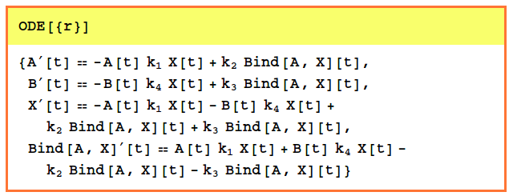
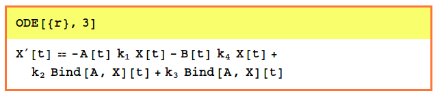
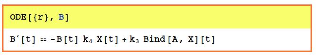

| ODE | Reference Home |
ODE[reaction,
reaction]returns the first differential equation
found by interpret in a reaction.
ODE[{reaction1,reaction2,...}] returns the list of differential equations found by interpret in a list of reactions.
ODE[{reaction1,reaction2,...}, n] returns the nth differential equation found by interpret in a list of reactions.
ODE[{reaction1,reaction2,...}, var] returns the differential equation for the variable var found by interpret in a list of reactions.
ODE[{reaction1,reaction2,...}, {X, Y, ...}}var] returns the differential equations for the requested variables: